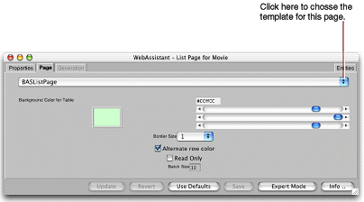

Customizing
Pages
The Customize Page display of the WebAssistant enables you
to set global attributes for the current page. These attributes
include the page template, the color of the table, whether this
color alternates with another color in lists, and the size of the
border enclosing the page. The following is an example of the Customize
Page display:

- To change
the template defining the page style, choose another template from
the pop-up list.
- To change the thickness of the border around the page, choose
a value from the Border Size pop-up list, replacing the current
number. You can specify a border thickness of 0 to 5 pixels.
- To change the color of the table, move the sliders to the
right of the sample color. The color specification is RGB-based
(that is, a specific mixture of red, green, and blue). The top slider
manipulates red saturation, the middle slider is for green, and
the bottom slider is for blue. The three pairs of hexadecimal digits
after the number sign in the field represent (left to right) saturation
levels of red, green, and blue.
© 2001 Apple Computer, Inc.